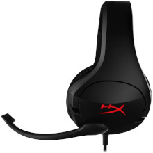
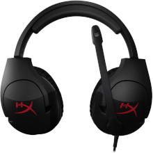
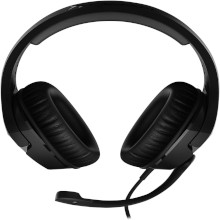

HeadTech




Headset Corsair Cloud Stinger
R$ 28990
em 12X de R$ 2499
Comprar agora
Adicionar ao carrinho
Estoque disponível: 100 Unid
HYPERX CLOUD STINGER CORE O HyperX Cloud Stinger Core™ é o headset perfeito, de nível de entrada, para o jogador de console que está procurando um ótimo som a um ótimo preço. Ele é compatível com vários consoles e apresenta controles de áudio no fio. O arco da cabeça ajustável e os fones de ouvido super macios oferecem conforto e o microfone flexível e giratório te permite posicionar o microfone como você preferir.